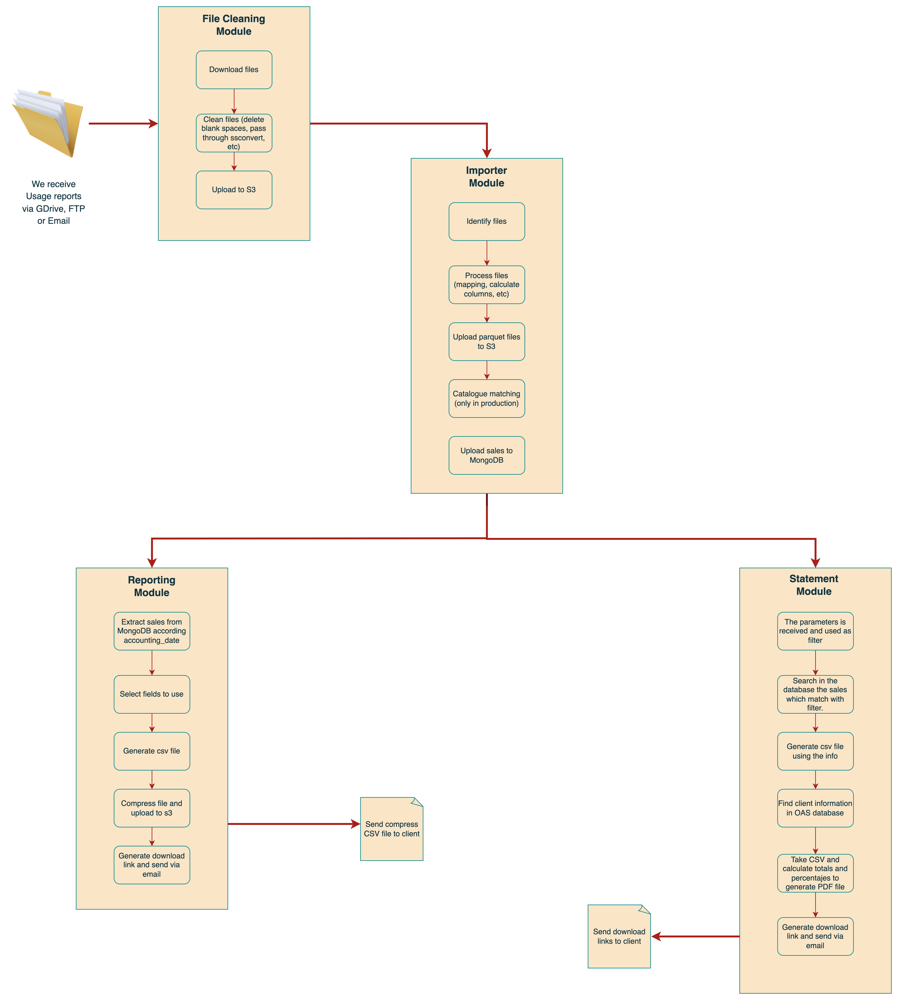
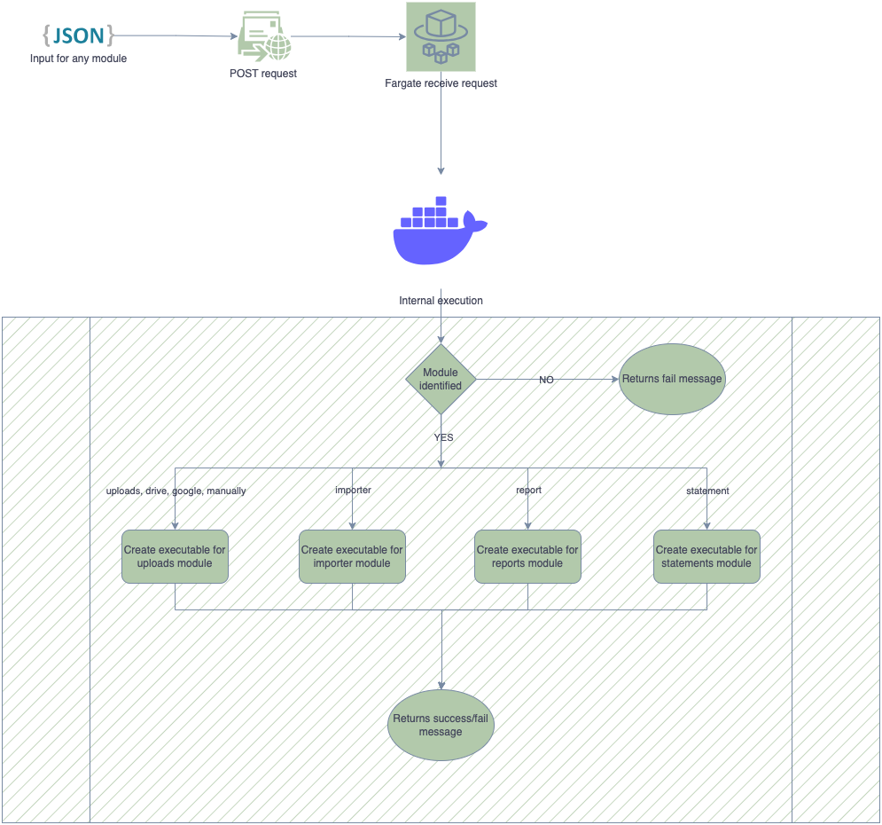

Technology stack
- Python >= 3.10
- Docker >= 26.1.4
- AWS
- AWS ECS
- AWS ECR
- Terraform install
- Gcloud
- Google Cloud Console
- Google Drive API
- FTP
- MongoDB
- PostgreSQL
- Latex compiler
- Access to glider repository in github
Workflow

Modules
The modules are explained in "Related Pages" section and they are the following:
- Uploads Module See more
- Importer Module See more
- Catalogue Module See more
- Report Module See more
- Statement Module See more
For more information you can see
AWS infrastructure
We use ECS (Fargate) which contains several routes (one per module). Each module should be executed according to input parameters and the route called by FE.
Fargate is a serverless service, so when the modules are called, it are executed via Docker container.
This container is saved in a private repository in ECR and used via ECS tasks. More information in OTTO: AWS Fargate Installation

This infrastructure is created via terraform See more
How to deploy
Set env variables. You should create two .env files
a) .env.dev for developing and testing
b) .env.prod for production
Both files have the same format, just add your dev and prod credentials for each file. Here's an example
ENVIRONMENT=<STAGING/PRODUCTION> AWS_KEY_ID=<YOUR_AWS_KEY_ID> AWS_KEY_SECRET=<YOUR_AWS_SECRET_KEY> MONGO_GLIDER=<MONGO_CONNECTION_LINK> DATABASE_URL=<POSTGRES_DATABASE> DB=<YOUR_DB> COLLECTION=<YOUR_MONGO_COLLECTION> TRENDS_COLLECTION=<YOUR_MONGO_COLLECTION_FOR_TRENDS> SNAPSHOTS_DB=<YOUR_MONGO_DB_FOR_SNAPSHOTS> FORMATS=<YOUR_MONGO_COLLECTION_FOR_FORMATS> SNAPSHOTS=<YOUR_MONGO_COLLECTION_FOR_SNAPSHOTS> CAT_COLLECTION=<YOUR_MONGO_COLLECTION_FOR_CATALOGUE> REGION=<YOUR_AWS_REGION> AS_COLLECTION=<YOUR_MONGO_COLLECTION_FOR_AS_CATALOGUE>
Build the container
docker-compose -f local.yml up --buildIt runs a local sever in 5000 port. If you go to http://127.0.0.1:5000 in your browser you would see the api interface
To test each module, you should see "Related Pages" section.
NOTE: If you use this endpoint https://ets7l0aij0.execute-api.us-east-2.amazonaws.com/dev/webhook as "on_finish" field, you would see the execution outputs, log files and inputs of any execution in this page https://ets7l0aij0.execute-api.us-east-2.amazonaws.com/dev/history
Tech documentation here: OTTO Glider Overview
Generated by